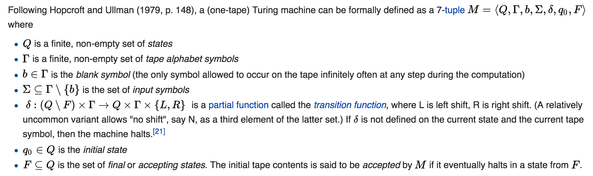
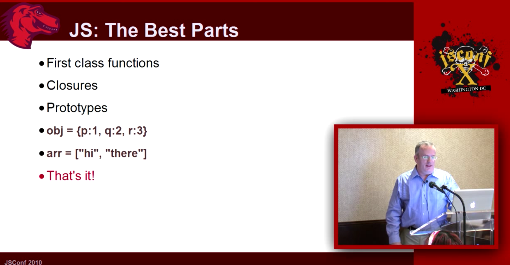
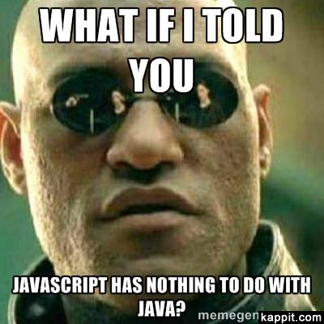
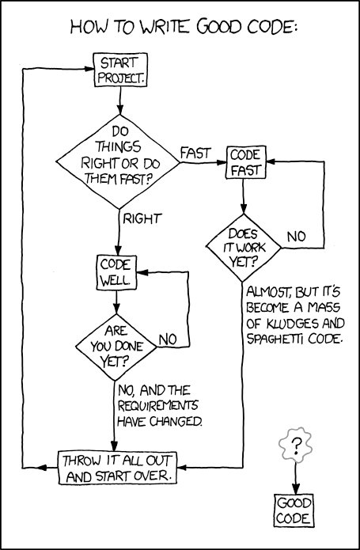
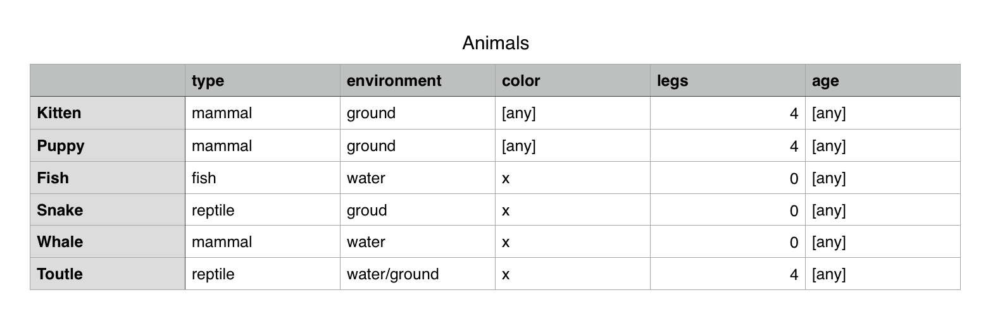
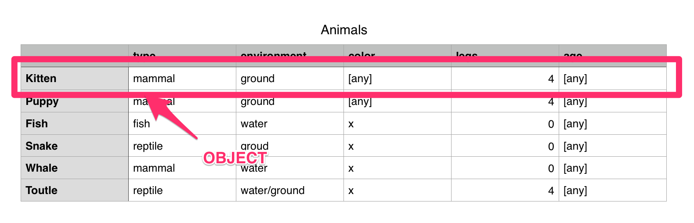
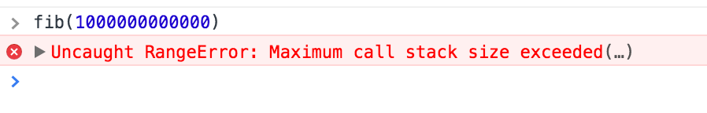
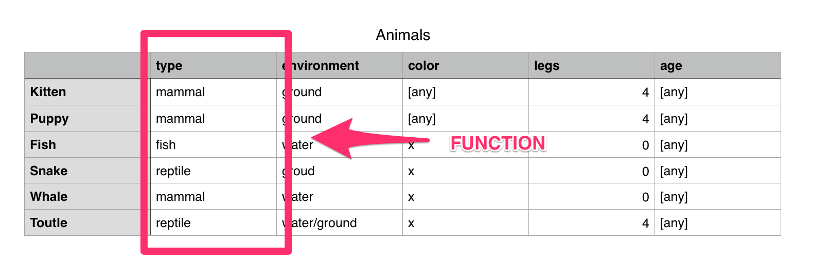
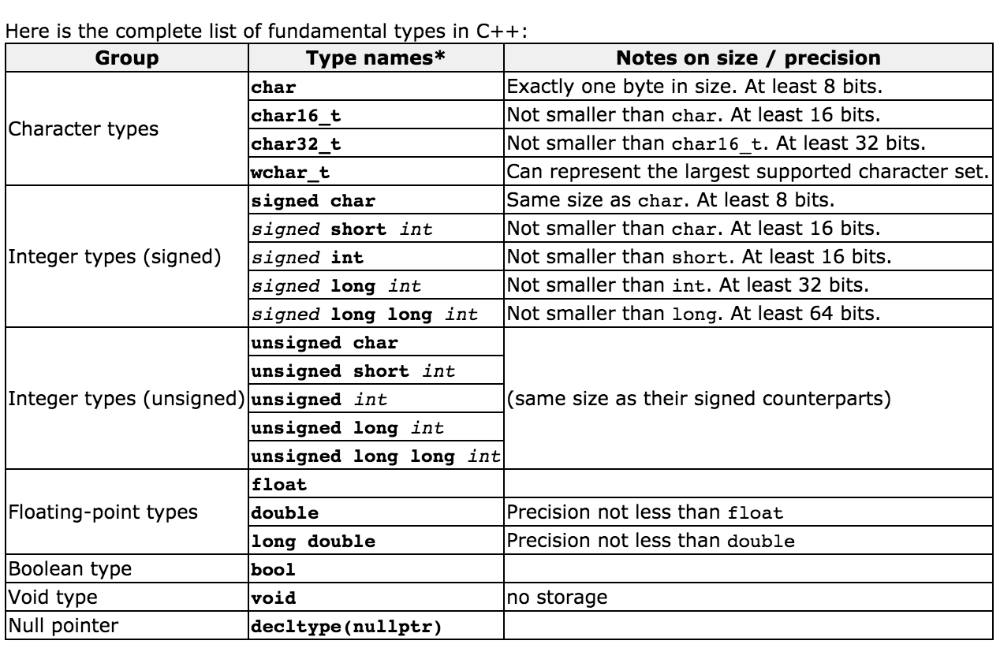
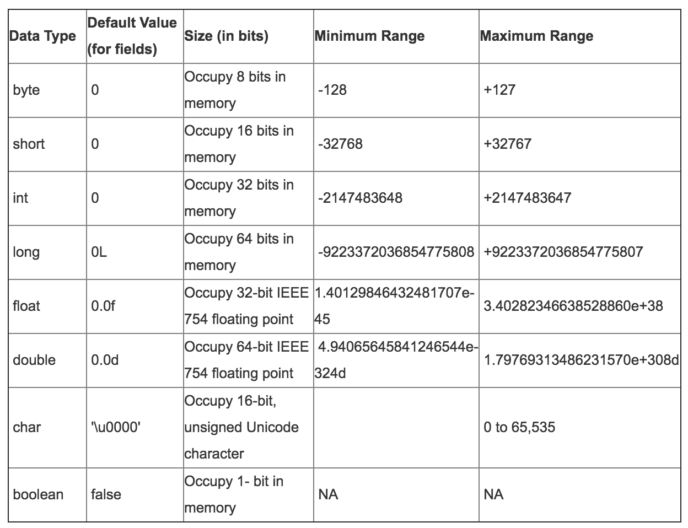

Almost Functional
Marek Fajkus
Created: 2016-06-23 Thu 11:53
Table of Contents
About me
Summary:
- JavaScript and Ruby developer
- Functional programming and opensource fanboy
- Living in Brno
Contact:
- github: github.com/turboMaCk
- twitter: @turbo_MaCk
Company
- London based, small remote team
- REST api, Single Page app, SQL + NOSQL, Micro services (kind of)
- Ember.js, D3.js, Rails, Grape, ElasticSearch, PostgreSQL, Scala, Druid, Kafka, Spark, Docker…
Purpose
When I am working on a problem I never think about beauty. I think only how to solve the problem. But when I have finished, if the solution is not beautiful, I know it is wrong.
~ R. Buckminster Fuller
Complexity
The computing scientist’s main challenge is not to get confused by the complexities of his own making.
~ E. W. Dijkstra
Be better
The best is the enemy of the good.
~ Voltaire
What we will be talking about?
- Computation
- JavaScript (language) design
- OOP
- Programming with functions
- Types (just a little bit)
What we will not be talking about
- Frameworks
- Tools
- Functional Reactive Programming (FRP)
- Concurrency
- Monoids, Monads…
Before we start
- If you do not understand something, ask
- I'm not a genius
- I'm not even smarter than you
- Say something if you think I'm wrong
Computation
Computation is any type of calculation that follows a well-defined model understood and expressed as, for example, an algorithm.
~ Wikipedia
History
Turing machine

Effects
With this model Turing was able to answer this two questions:
- Does a machine exist that can determine whether any arbitrary machine on its tape is "circular"?
- NO
- Does a machine exist that can determine whether any arbitrary machine on its tape ever prints a given symbol?
- NO
Digital

von Neumann architecture
This describes a design architecture for an electronic digital computer with parts consisting of a processing unit containing an arithmetic logic unit and processor registers, a control unit containing an instruction register and program counter, a memory to store both data and instructions, external mass storage, and input and output mechanisms.
Ability to treat instructions as data is what makes assemblers, compilers, linkers, loaders, and other automated programming tools possible.
Memory overflow invented <3
Abstractions

λ-calculus
Formal system in mathematical logic for expressing computation based on function abstraction and application using variable binding and substitution
- Turing complete
- May be both typed and untyped.
Father of:
- Functional programming
- Category Theory
More abstractions - Actor Model
The actor model in computer science is a mathematical model of concurrent computation that treats "actors" as the universal primitives of concurrent computation.
In response to a message that it receives, an actor can:
- make local decisions
- create more actors
- send messages
- determine how to respond to the next message received
Why I think this is (kind of) important?
Platform (hardware) is implementation detail of computation
JavaScript

Language
JavaScript is a high-level, dynamic, untyped, and interpreted programming language.
~ Wikipedia
MDN said..
JavaScript (JS) is a lightweight, interpreted, programming language with first-class functions. Most well-known as the scripting language for Web pages, many non-browser environments also use it, such as node.js and Apache CouchDB. JS is a prototype-based, multi-paradigm, dynamic scripting language, supporting object-oriented, imperative, and declarative (e.g. functional programming) styles.
Functional?
"JavaScript is a functional language with dynamic objects and familiar syntax"
~ Douglas Crockford: Really. JavaScript (talk)
"JavaScript is functional language in the way Lisp and Scheme were functional languages."
~ Douglas Crockford: The JavaScript Programming Language (talk)
"Pure functional programming means functions are mathematical functions… …subrutine is allowed to do mutation and in mathematical function it doesn't happen."
~ Douglas Crockford: Monads and Gonads (talk)
Ask author
"JavaScript is kind of the chainsaw you have in place of hand on web."
~ Brendan Eich: JavaScript Taking Both the High and Low Roads
JS: The Best Parts

~ Brendan Eich: An Introduction to JavaScript (talk)
Ehm…
Important stuff
JavaScript is dynamic-weak typed imperative general purpose programming language with first class higher order functions, prototype based object orientation, lexical function scoping with no implicit return running on various hosted environments.
Weak typing
Performs implicit type conversion.
1 + '1' // => '11'
1 - '1' // => 0
1 / 2 // => 0.5
1.5 * 2 // => 3
1 < 2 < 3 // => true
3 > 2 > 1 // => false
First class functions
This means the language supports passing functions as arguments to other functions, returning them as the values from other functions, and assigning them to variables or storing them in data structures.
~ Wikipedia
My definition: Has fuctions expressions.
const identity = function(x) {
return x;
}
const o = {
val: 1,
get: function { return val; }
};
o.set = function(val) { this.val = val }
Higher Order Function
Higher-order function is a function that does at least one of the following:
- takes one or more functions as arguments
- returns a function as its result.
function multiplyByTwo(fun, val) {
return fun(2 * val);
}
multiplyByTwo(function(val) { 2 * val; }, 1); // => 4
function lazyMultiply(a, b) {
return function() {
return a * b;
};
}
var lazy = lazy(6, 2); // => function
lazy(); // => 12
Function Scoping
Variables scope ends (goes out of context) when the function returns
function geet() {
if (1 == 1) {
var text = 'hello';
}
console.log(text);
return funtion() {
console.log(text + ' again!');
};
}
var result = greet() // => logs 'hello'
result() // => logs 'hello gain!'
text // => undefined
Lexical function scope
In languages with lexical scope (also called static scope), name resolution depends on the location in the source code and the lexical context, which is defined by where the named variable or function is defined.
#+BEGIN_SRC javascript function wrap(a) { return function() { return a; } } wrap('hello')() // => 'hello' #+END_SRC javascript
~ Wikipedia
ES2015 and block scope
function letGret() {
if (1 == 1) {
let text = 'hello';
}
console.log(text); // let is undefined
}
letGeet() // => logs nothing
Prototype based OOP
Prototype-based programming is a style of object-oriented programming in which behaviour reuse is performed via a process of reusing existing objects via delegation that serve as prototypes.
~ Wikipedia
const object = {
property: 'value',
setProperty(value) {
this.property = value;
}
};
const child = Object.create(object);
child.setProperty('new');
console.log(child.property, object.property); // logs 'new' 'value'
function meta(object) {
object.__proto__.hi = () => {
console.log('hi');
};
}
meta(child);
child.hi(); // logs 'hi'
Java

But RLY?
No implicit return
function identity(x) {
return x;
}
const identity = x => x;
Examples
Show me some code!
Conclusion
- JavaScript seems to be pretty different from classic mainstream languages in some ways.
- However it's still as imperative as Java and has also similar syntax.
More resources
Kyle Simpsons: What the… JavaScript? https://www.youtube.com/watch?v=2pL28CcEijU
Douglas Crockford: Really. JavaScript https://www.youtube.com/watch?v=lTWGoL1N-Kc
Douglas Crockford: The Better Parts https://www.youtube.com/watch?v=PSGEjv3Tqo0
Brendan Eich: An Introduction to JavaScript https://www.youtube.com/watch?v=1EyRscXrehw
Rob Ashton: Javascript sucks and it doesn't matter https://www.youtube.com/watch?v=PV_cFx29Xz0
OOP vs Functional
- imperative OOP
- functional OOP
- imperetative procedural
- functional procedural
Why OOP?
What OOP brings us?
- lower level code as higher level abstraction
- application specific code as lower level abstraction
class Couner extends ReactComponent {
...
render() {
return div(...);
}
}
Classes sux so much…
Let's develop dummy application
Pet store!
- We need system for collecting informations about pets we have
- We have Puppies and Kittens
- We need to know their colour
- We need to know their gender
- We need to track their age
- We better add number of legs fore some reason
- We didn't start making mone/not read need to build MVP first
Minimum Product
class Animal {
constructor(gender, age, colour, numberOfLegs = 4) {
this.gender = gender;
this.age = age;
this.colour = colour;
this.numberOfLegs = numberOfLegs;
}
};
class Kitten extends Animal {};
class Puppy extends Animal {}
kitten = new Puppy("female", "2 weeks", "white");
puppy = new Puppy("male", "2 monts", "black");
Next iteration
System is great! We're doing well it's time to expand. We now have so many puppies we need to distinguish race.
class Puppy {
constructor(gender, age, colour, race) {
super(gender, age, 4);
this.race = race;
}
}
Fish & Snakes
We have great opportunity to starts selling fishes and snakes. Let's extend our store.
- wait? Do we want to have colour and number of legs as attr of fish and snakes?
- sure not..
class Mammal extends Animal {
constructor(..., colour, numberOfLegs, ...) {....}
}
class Puppy extends Mammal...
class Kitten extends Mammal...
class Fish extends Animal...
class Snake extends Animal...
Getting worse
Fishes and snakes are Hit! People in big city (like Brno) loves them. This is why we want to expand this kind even more. For some reason we want to sell Whales and Turtles.
- But wait? Is whale fish or mammal?
- And can we group snakes and turtles as reptiles
- Do we now want to group animals by environment they live in (e.g. water)
- This is stupid… I'm leaving
Good code

The Problem with Classes
Class oriented design forces you to make decisions you're not ready to make yet.
Polymorphism is good for logic, but not for data.
Data

OOP thinking

Logic is coupled with data.
…and data changes over time.
More resources
"uncle" Bob Martin: SOLID Principles of Object Oriented and Agile Design https://www.youtube.com/watch?v=TMuno5RZNeE
Functional programming
In computer science, functional programming is a programming paradigm—a style of building the structure and elements of computer programs—that treats computation as the evaluation of mathematical functions and avoids changing-state and mutable data.
~ Wikipedia
Function
In mathematics, a function is a relation between a set of inputs and a set of permissible outputs with the property that each input is related to exactly one output.
~ Wikipedia
Functions
function(x) {
return 3 * x + 5;
}
function(x) {
a++;
return a * x + 5;
}
Fibonacci number
F(1) = 1
F(2) = 1
F(n) = F(n-1) + F(n-2)
function fib(n) {
if (n <= 1) { return n; }
return fib(n-1) + fib(n-2);
}
Imperative optimization
function fib(n) {
const fibs = [0, 1];
for (let i=2; i <= n; i++) {
let current = fibs[i-1] + fibs[i-2]
fibs.push(current)
}
return fibs[n];
}
Tail recursion
function fib(n) {
if (n <= 1) { return n; }
// i => iterations left
// a=fib(n-2), b=fib(n-1)
function tailFib(i, a, b) {
if (i===1) { return a + b; }
return tailFib(i-1, b, a + b);
}
return tailFib(n-1, 0, 1);
}

Lodash / Underscore
_.map([1, 2, 3], function(n) { return n * 3; });
// ➜ [3, 6, 9]
I think that underscore does a terrible job of saying function.. you know it says it's functional but it's not really when you compare it to real functional language.
~ Brian Lonsdorf: Hey Underscore, You're Doing it Wrong!
Curring
In mathematics and computer science, currying is the technique of translating the evaluation of a function that takes multiple arguments (or a tuple of arguments) into evaluating a sequence of functions, each with a single argument.
~ Wikipedia
function add(a) {
return function(b) {
return a + b;
}
}
function addTwo = add(2);
add(2)(3); // => 5
addTwo(3); // => 5
Currying vs underscore
_.map([1, 2, 3], n => n * 3; );
const map = function(fce) {
// using native array map
return arr => arr.map(fce)
}
map(a => a + 2)([1,2,3]);
// => [3,4,5]
const addTwo = a => a + 2;
const addTwos = map(addTwo)
addTwos([1,2,3]);
// => [3,4,5]
Lodash
// Load the full build.
var _ = require('lodash');
// Load the core build.
var _ = require('lodash/core');
// Load the fp build for immutable auto-curried iteratee-first data-last methods.
var fp = require('lodash/fp');
JavaScript native curring
function add(a, b) {
return a + b;
}
const addTwo = add.bind(undefined, 2);
addTwo(3) // => 5
Function composition
(g ∘ f)(x) = g(f(x))
function compose(f, g) {
return x => f(g(x));
}
const greet = name => "hi: " + name;
const exclaim = statement => statement.toUpperCase() + "!";
const welcome = _.compose(greet, exclaim);
welcome('moe');
// => 'hi: MOE!'
Functional thinking

Solving problems functionaly
function Animal(gender, age, color, legs) {
return {
gender: gender,
age: age,
color: color,
legs: legs
};
}
function Kitten(geneder, age, color) {
return Animal(gender, age, colour, 4)
}
function Fish(gender, age) {
return Animal(gender, age)
}
function environment(animal) {
return animal.legs ? 'ground' : 'water';
}
const neo = Fish('male', 10);
environment(neo); // => 'water
More resources
Brian Lonsdorf: Hey Underscore, You're Doing It Wrong! https://www.youtube.com/watch?v=m3svKOdZijA
Rich Hickey: The Value of Values https://www.youtube.com/watch?v=-6BsiVyC1kM
"pragmatic" Dave Thomas: Think Different https://www.youtube.com/watch?v=5hDVftaPQwY
Type Safety
In computer science, type safety is the extent to which a programming language discourages or prevents type errors.
~ Wikipedia
Types & Memory

Java primitives

Type safety
- C
- C++
- Java
- JavaScript
- Python
Type Memory safety
- C - unsafe
- C++ - unsafe
- Java - safe
- JavaScript - safe
- Python - safe
Sets, Type theory, Category theory
Russels's paradox (naive set theory)
Runtime errors
const map = function (fce) {
return arr => arr.map(fce)
}
const addTwo = (a) => { a + 2; }
const addTwos = map(addTwo)
addTwos([[1,2], [3]]);
[undefined, undefined]
..Runtime errors
addTwos('hello!');
Uncaught TypeError: arr.map is not a function
Functions for types
const addTwo = (a) => { a + 2; }
Array.prototype.addTwos = function() {
return this.map((val) => {
if (Array.isArray(val)) {
return val.addTwos();
}
return val + 2;
});
}
[[1,2], 3].addTwos();
// => [[3,4],5]
Functor
In mathematics, a functor is a type of mapping between categories which is applied in category theory. Functors can be thought of as homomorphisms between categories.
~ Wikipedia
[1,2,3].map(a => a + 1)
Lets implement some functor… in JS
Maybe…
Learn more
Brian Lonsdorf: Monads, Monoids and Make Believe
Compile to JS?
- Elm
- PureScript
- ClojureScript
- LiveScript
- Scala.js
Thank you!
Questions?